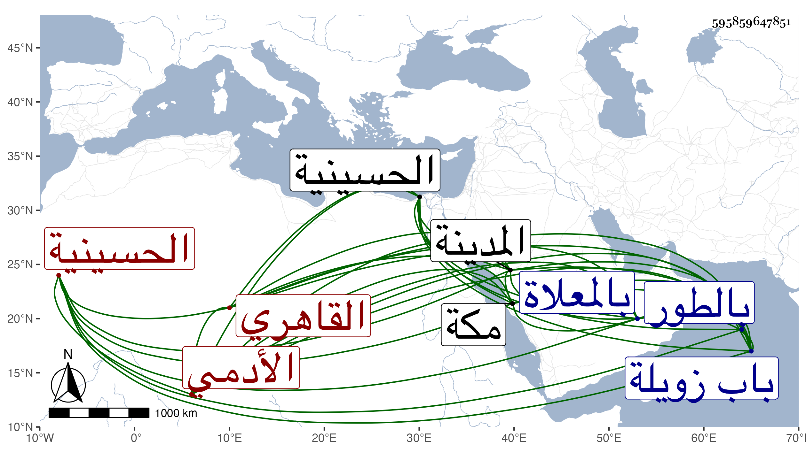

0902Sakhawi.DawLamic.ITO20230111-ara1.EIS1600.595859647851
Biography ID: 595859647851
1053
علي بن محمد بن علي بن أحمد بن أبي بكر الأدمي القاهري الماضي جده وأخوه عبد الرحمن وقريبهما عبد الباسط بن محمد بن عبد الرحمن والآتي أبوه . ولد سنة ثمان وعشرين وثمانمائة بالحسينية ونشأ فحفظ العمدة والمنهاج وألفية النحو وجمع الجوامع والكثير من التسهيل ، وعرض على جماعة ولازم أبا القسم النويري وسمع على شيخنا وغيره وتكسب بالشهادة في حانوت الخضريين خارج باب زويلة بل ربما ناب في بعض القرى ، وسافر في البحر غير مرة وصار يعتني بالمراكب والحمل فيها بالبحر المالح ويأخذ لأجل ذلك من أموال الناس بالربح وغيره ما يصرفه فيها وهو يصاب مرة بعد أخرى إلى أن كان في سنة تسعين أو التي بعدها فغرق له مسماري ثقيل بالقرب من بعض البنادر وعجز عن تخليص أخشابه وأقام لذلك بالطور ثم بالمدينة النبوية ثم بمكة وتعلل فيها بالإسهال وغيره حتى مات غريبا وحيدا زائد الفاقة في ربيع الأول سنة ثلاث وتسعين. وصلي عليه بعد صلاة الجمعة ثم دفن بالمعلاة سامحه الله وإيانا .
